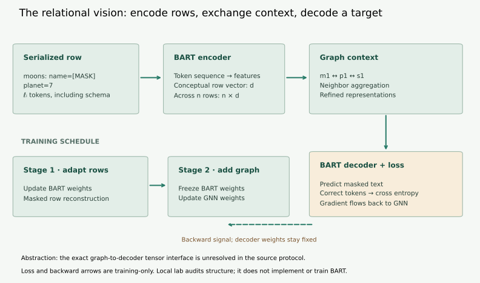
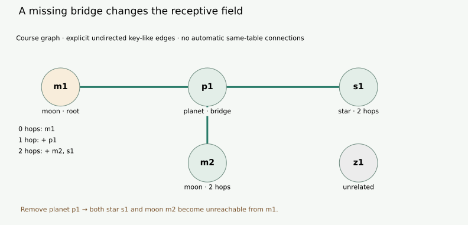

Year 5 · Quarter 1 · Lesson 162
The relational FM vision
Quick reference · Vision map template · Reproduction contract · Complete local audit
1 · A row is a starting point, not the whole database¶
Single win: explain how a row language model and a graph could work together, then turn that architecture into a testable opportunities/obstacles map. Read the main argument first; complete the notebook and map in a separate practice session.
Lesson 159 supplied masked reconstruction objectives: hide an item and learn to recover it. Lesson 161 asked what makes a learned starting point reusable. Neither objective nor definition explains how related tables enter a prediction. This lesson connects them through Vogel, Hilprecht and Binnig’s 2023 relational foundation-model vision.
Worked example. A database has rows about moons, their planets and their stars. A moon row carries a planet key. That planet carries a star key. A language model that reads only the moon’s text cannot directly read a star’s attributes. We need a route between the rows before we can ask whether those attributes help.
A primary key identifies a row. A foreign key refers to a row in another table. A graph represents entities as nodes and relationships as edges. Message passing updates a node’s representation using representations from its neighbors. One hop crosses one edge. These definitions concern information access; useful prediction still has to be learned and tested.
In plain terms. Let the language model read a manageable piece. Let the graph connect pieces that belong together. Then test whether those connections help.
2 · Model architecture: text inside rows, context between rows¶
Reading route. Follow the moon row through the encoder, graph and decoder first. Then return to the two training stages. The forward arrows carry representations; the backward training signal changes only the weights that are allowed to learn.
A language model (LM) learns patterns in token sequences. A token is a piece of text recognized by its tokenizer. Serialization turns structured values and schema names into a sequence. An encoder turns that sequence into numerical representations; a decoder uses representations to generate output text. An embedding is a learned vector representing an input.
The paper’s proposal combines row-wise LM encoding with a graph neural network (GNN) and a task head. Its prototype uses BART, an encoder–decoder LM, and a graph convolutional network (GCN), a form of neighborhood aggregation. Row serialization includes table and column names. Paper §§2–4
Follow the computation
Frozen language weights can still pass gradients
- 1
Serialize and encode rows
BART encodes row text and schema information.
- 2
Exchange relational context
The GNN refines representations using connected rows.
- 3
Decode masked text
A reconstruction loss measures whether the missing target can be recovered.
- 4
Distinguish the two stages
Adapt the language model first; in the graph stage freeze language weights while updating graph weights.
Open the decisive operation
Does freezing the decoder’s weights mean blocking the gradient at its input?
No. A fixed differentiable decoder can still transmit the loss gradient to the GNN that supplied its input.
Trace answer: No. A fixed differentiable decoder can still transmit the loss gradient to the GNN that supplied its input.
Conceptual source-inspired route. The historical graph–decoder tensor interface remains unresolved; the lab does not train BART.


Trace the forward pass. Start with a row such as moons: name=[MASK]; planet=7. [MASK] marks withheld content. After tokenization, the row has length ℓᵢ tokens, where i identifies the row. The encoder produces a representation of width d, where d is a feature count. Across n rows, a conceptual row-vector array has shape n×d. A graph operation combines connected representations. A decoder then predicts tokens for the withheld name.
What the drawing abstracts. The paper describes representations at cell, column and table levels, but does not specify enough of the graph/decoder interface to reconstruct the exact released tensor routing. The n×d row-vector view is an explanatory abstraction. Decoder inputs may require a sequence or projection. The figure deliberately leaves that historical interface unresolved rather than inventing its shape.
Two training stages. First adapt BART on masked row reconstruction. Then freeze its parameters while training the GNN to improve reconstruction through graph context. A parameter is a learned weight; freezing means not updating it. A gradient measures how a change affects the loss. Cross entropy penalizes low probability assigned to the correct output token. The frozen decoder still needs to pass gradients back to the GNN. Turning off all differentiation through the decoder would prevent that training signal. The source also discusses joint end-to-end training as a more costly alternative, not the reported staged recipe. Paper §§3–4
Mask before encoding. If a hidden name remains visible in another serialized copy or a cached clean embedding, reconstruction can leak its answer. L159 examined that danger. Here we trace access to representations; the local audit neither tokenizes real data nor trains BART.
3 · Context is a path, not a promise¶
Our course graph has five nodes: moon rows m1 and m2, planet p1, star s1, and unrelated row z1. The edges m1—p1, m2—p1 and p1—s1 pass information both ways. This is an explicitly chosen teaching graph, not a reconstruction of the paper’s undocumented graph construction.


Worked trace. Starting at m1, zero hops retain only m1. One hop adds p1. Two hops add m2 and s1. The unrelated z1 remains unreachable. Reaching m2 uses two key edges through the shared planet; the example does not add an automatic same-table edge.
A receptive field is the set of inputs that can potentially affect an output through the available computation. Reachability is a structural upper bound: learned weights might suppress a message, and an accessible value might be irrelevant. More reachable rows do not guarantee higher accuracy.
Remove an intermediate table. If we exclude planets, we remove p1 and its incident edges before traversing. The retained moon and star tables do not create a shortcut. An induced subgraph retains chosen nodes and only edges whose two endpoints remain. Neighborhood limits can lower graph work, but also discard useful context. This is one scale–context trade-off discussed in the paper. §3, efficient learning
Lab task 1 — reachable_rows. Implement the traversal over the induced graph. Return sorted unique row IDs reachable within at most h hops, including the root. Test an excluded intermediate table and a disconnected row. The CHECK must reject a solution that simply returns all rows.
4 · Many rows and wide rows are different obstacles¶
A row input can fit while the table does not. Suppose two serialized rows have 3 and 5 tokens. Joining them gives 8 tokens. A simple dense attention score matrix compares every token with every token: 8×8=64 ordered pairs. Separate row inputs give 3×3+5×5=34 pairs. The missing cross-row token comparisons explain why another mechanism is needed for context.
Let ℓᵢ denote each row length. The hypothetical whole-table pair count is (Σᵢ ℓᵢ)²; independent rows give Σᵢ ℓᵢ². The symbol Σ means “sum over rows.” These are counts for one dense attention score pattern, not measured speed, total model floating-point operations (FLOPs) or memory. Graph computation, decoder work, other transformer operations and padding are absent.
Hold total tokens fixed. Eight tokens do not determine the row-wise attention work; their distribution matters:
| Row lengths | Total tokens | Independent-row pairs |
|---|---|---|
| 8 | 8 | 8² = 64 |
| 4, 4 | 8 | 4² + 4² = 32 |
| 1, 7 | 8 | 1² + 7² = 50 |
No token is dropped in these fixtures; use limit 8. Uneven lengths increase the sum of squares relative to equally sized rows. This is not permission to arbitrarily split semantic rows: reserialization can add schema tokens, lose interactions and change the task. Try it: use lengths 2 and 6. Check: 40 ordered pairs, between 32 and 50. All three two-row cases still have a whole-table proxy of 64, and none includes graph or decoder work.
A wide row can still fail. The source identifies a 1024-token BART input limit. A row with 1100 serialized tokens exceeds it by 76. Processing rows independently does not solve that case. Truncating loses information; splitting columns may change which facts can interact. Schema and special tokens also consume the real input budget. Paper §3, wide tables
Fixed baseline. The widget starts at two rows of 3/5 tokens and limit 4, deliberately small enough to count by hand. Whole-table pairs = 64, independent-row pairs = 34, and truncated-row pairs = 3² + 4² = 25. One token is dropped. The smaller 25 is purchased by deleting input; it is not a free improvement. The wide-row preset uses 1100/18/22 tokens and the source’s 1024-token limit.
Lab task 2 — token_budget. Return both untruncated pair counts, retained pair count, dropped tokens and overflowing row indices. Use supplied synthetic lengths, without claiming to run a tokenizer. An input length of zero is legal in this arithmetic exercise; actual BART inputs generally contain special tokens.
5 · What the initial experiment actually establishes¶
The vision is pretraining across diverse relational databases and reuse on new ones. The initial evaluation instead uses single-table corpora, wikiTables and gitTables, for reconstruction. The authors use 10,000 tables per corpus, a 70/20/10 split, best-validation-accuracy checkpoints and three-run means. Graph context within a table can help without demonstrating foreign-key transfer across unseen databases. Paper §4
| wikiTables reconstruction task | Published BART_table accuracy | Published +GNN accuracy |
|---|---|---|
| Missing cell values | 20.75% | 46.15% |
| Column names | 66.88% | 83.91% |
| Table names | 36.99% | 37.85% |
These are published Table 1 targets, not this lesson’s results. The missing-value difference is 25.40 percentage points; it is not a 25.40% relative improvement. Neither that difference nor the table-name result isolates all confounders of additional graph training.
Full-reproduction boundary. The selected target is the complete wikiTables two-arm, three-task, three-run comparison. Exact subsets/splits, matching implementation and important configuration details remain unavailable in our bounded source search. Historical reproduction is NOT_RUN, and fidelity is NOT_ESTABLISHED. The runnable local audit below is a different experiment. See the protocol and source-gap ledger.
Lab task 3 — evidence_verdict. Check six evidence declarations: multi-table evaluation, held-out database identity, audited pretraining provenance, legal adaptation, a matched baseline and verified predictions. Collect every missing item. If all six are present, return TRANSFER_REVIEW_ELIGIBLE; retain transfer=NOT_ESTABLISHED until the evidence itself receives review. RECONSTRUCTION_ONLY and MULTITABLE_ONLY describe maximum scope conditional on the record, not certified performance.
A matched baseline receives the declared comparable information and adaptation budget. Legal adaptation uses only labels and information allowed by the evaluation protocol, including query cutoffs. Verified prediction files still require appropriate metrics, uncertainty and scientific interpretation. A Boolean declaration cannot do that work.
6 · Build the opportunities and obstacles map¶
| Opportunity | Why the design might help | Obstacle | A test that could change your mind |
|---|---|---|---|
| Neighbor-table information | Paths expose related rows | Sampling can cut the necessary path | Compare full and cut paths on matched held-out queries |
| Many-row processing | LM inputs stay row-sized | Graph and total row encoding still grow | Measure end-to-end cost as row count increases |
| Reusable representations | Pretraining supplies a shared starting point | Connected corpora and database provenance | Hold out an entire database and compare with training from scratch |
| Numerical and typed information | Additional features can complement text | Numeric structure can be poorly preserved | Compare text-only and typed inputs on a prespecified task |
The paper discusses corpus availability, wide tables, graph efficiency and statistical features as open challenges. The tests above are course proposals, not experiments the paper completed. L163 will examine row encoding choices; L164 introduces Griffin. This lesson supplies the questions to carry into those readings.
Executed author audit: all 16 graph interventions, 8 token cases and 64 evidence configurations completed. Of the evidence fixtures, 32 have a reconstruction-only scope ceiling, 31 a multi-table-only ceiling and 1 is eligible for transfer review. All 64 retain transfer NOT_ESTABLISHED. These are synthetic declarations, not benchmark populations. Complete output.
Practice sequence. Predict the graph and token examples before running code. Implement the three functions and complete every CHECK. Write a 400–600-word map using the template, including an explicit adaptation budget and a disconfirming result for your proposed transfer experiment. Keep the map’s arguments distinct from the deterministic audit’s outputs.
Exit criterion. Human review scores architecture, context/scale arithmetic, causal mapping, source boundaries and falsifiable evaluation from 0–2 each. Aim for ≥ 8/10 with no zero. Author execution is preparation; your status remains PENDING_WRITTEN_DEFENSE until your own work is assessed. Existing Year 4 exit gates remain unchanged.
Tomorrow, redraw m1→p1→s1 and explain why row count differs from row width. In one week, explain why a stronger reconstruction score need not imply transfer. Ask the teaching agent about any unclear step or paste your map for feedback.
Primary reading: Vogel, Hilprecht and Binnig, Towards Foundation Models for Relational Databases, §§2–4. Read the architecture beside its experiment boundaries.